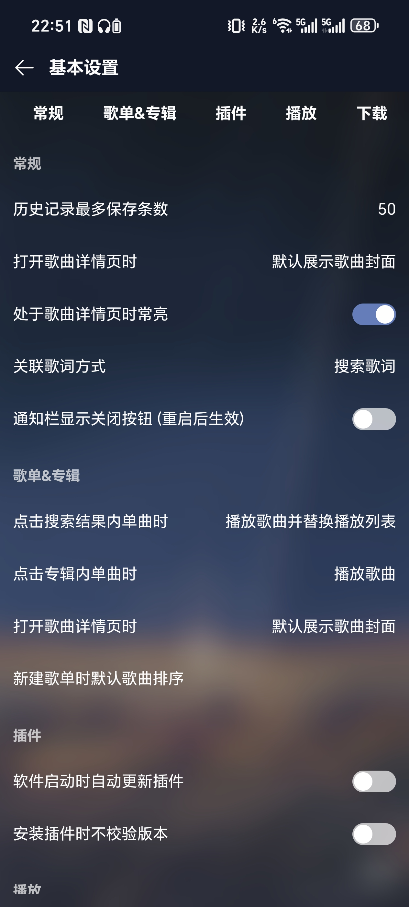

MusicFree 为什么把音源拆成了插件——从架构设计看一款开源播放器的取舍
很多人第一次用 MusicFree 都会困惑：音源在哪？为什么要装插件？这篇从技术架构的角度拆解这款播放器背后的设计逻辑。
第一次启动 MusicFree 时你大概率会懵——界面空空如也，没有一首歌可以搜，甚至连音源设置的入口都要找半天。再看文档，官方把音源、歌单导入、搜索全部做成了"插件"，软件本体只负责播放界面和控制逻辑。
为什么一个音乐播放器要把音源完全剥离出去？ 为什么不内置几个主流音源，让用户开箱即用？为什么连云端同步都要放弃，所有数据硬塞本地？这些疑问放在其他产品上可能是功能缺失，但打开它的官网就会发现，放在 MusicFree 上其实是一套经过深思熟虑的架构选择。
问题：播放器面临的三重死锁
在拆解 MusicFree 的架构之前，先得搞清楚传统聚合播放器踩过哪些坑。我把它们归纳成三重死锁：
第一重：版权死锁。 任何内置音源的播放器，只要接了网易云、QQ 音乐这类平台，就绕不开授权问题。你用官方 API，平台随时可以封；你用逆向接口，法律风险悬在头顶。MusicFree 的开发者猫头猫在文档里反复强调——软件本体"不带音源"，所有音源通过插件实现。这个声明背后不是技术能力的问题，而是一个明确的立场选择：播放器负责播放，音源交给生态，两者在法律层面彻底切割。
第二重：更新死锁。 假设你内置了五个音源，其中一个平台改版了接口，你就得发一个新版本让所有用户更新。MusicFree 的插件化把这个问题解耦了——平台改版只需对应插件的作者去更，宿主本体不用动，用户也不用重新装整个软件。它的文档里提到 plugins.json 的加载机制就印证了这一点：宿主只是下载 JSON 索引、按协议注册 .js 文件，插件的生命周期完全独立。
第三重：体量死锁。 每加一个音源，播放器就要多维护一套搜索、播放、歌单同步的适配代码。音源越多，代码库越臃肿，不同平台的适配成本也越高。MusicFree 选择本体只做"最小播放器"，把复杂度全部推给插件层，换来的是跨平台轻量化——一个 AGPL 3.0 协议的开源项目，能同时跑 Android、HarmonyOS、Windows、macOS、Linux，靠的就是这层极简本体。
拆解：插件化架构到底是怎么跑起来的
说插件化容易，真做起来得解决几个核心问题：宿主怎么发现插件？插件怎么跟宿主通信？插件坏了会不会拖垮整个应用？
插件的发现与加载
文档里提到 plugins.json 的结构很简单——一个数组，每项包含 name、url、version、desc。宿主启动时拉取这个 JSON，下载每个 url 指向的 .js 文件，然后按插件协议注册。
这里的巧妙之处在于"协议"这个词。插件不是随便一段 JS 就能跑的，它必须导出一组宿主认识的接口——比如搜索、获取播放地址、获取歌单。宿主不关心插件内部怎么实现，只认这几个标准接口。这意味着：
- 一个插件作者不需要懂播放器的 UI 逻辑，只要按协议把接口填好就行。
- 宿主不需要为每个插件写适配代码，所有插件走同一条加载路径。
- 插件可以随时替换，比如你嫌官方网易云插件不够快，可以装第三方实现。
通信的隔离边界
有人可能会问：如果一个插件崩了，会不会整个播放器都挂？MusicFree 在架构上做了隔离——插件是独立的 JS 运行环境，宿主通过消息机制和它通信，而不是直接调用。这就好比浏览器里的每个网页跑在各自的进程里，一个网页崩了不会把整个浏览器带走。
文档里提到"部分版本加入了插件安全校验机制，非官方签名的插件会被拒绝"。这个细节说明开发者也意识到了隔离不是万无一失——有些恶意插件可能尝试越权访问宿主的数据目录。签名校验相当于在隔离墙外面又加了一道铁门。
本地存储的选择
歌单和收藏数据全部存在本地、不支持云同步——这是 MusicFree 最反直觉的设计之一。其他播放器都在拼命做云备份、多端同步，它偏不。
文档里给出的解释是"为了保持架构的轻量和隐私性"。翻译成技术语言就是：云同步意味着你要维护服务器、处理账号体系、解决跨平台数据冲突——这三件事每一件都是吞时间的黑洞。MusicFree 选择放弃它们，把架构复杂度压到最低。代价也很明确：换设备得手动复制数据目录，丢了没法找回来。

取舍：这套设计的代价是什么
架构选择从来都是 trade-off。MusicFree 的插件化和轻量化决定了它适合一部分人，同时也天然地不适合另一部分人。
你会遇到的麻烦
首次启动一片空白。 安装包从官方下载拿，装好打开软件直接看到一个空壳。没有预装音源，文档里教你从网络安装插件，但很多人走到这一步就放弃了。这是开源项目的典型问题——技术上的优雅在用户体验层面是第一道门槛。
插件生态是灰区。 官方示例仓库的插件"仅供学习参考"，过滤了所有 VIP 和付费歌曲。这意味着你搜很多热门歌曲会直接返回空——这不是 Bug，是设计行为。第三方插件质量参差不齐，有的作者弃坑了，有的可能藏了可疑的网络请求。文档里提醒用户"安装前快速扫一眼源码"，这个建议是对的，但大部分普通用户做不到。
多端同步得手动搬数据。 从 Android 换到 Windows，你得找到应用专属存储路径，把整个数据目录复制过去。文档里没有给出一键导出的选项，因为这个功能本身就不在架构设计里。
它真正擅长的场景
对隐私敏感的用户。 所有数据都在本地，没有账号体系，打开即用。你搜过什么、听过什么、收藏过什么，除了你自己的硬盘谁也拿不走。这一点在当前各平台争抢用户数据的环境下，反而是稀缺品。
喜欢折腾的技术用户。 你可以自己写插件、改插件、混合多个插件的音源。AGPL 协议保证了如果你基于它做二次开发也必须开源，但反过来你也能享受完整的源码可审计性——你知道这个播放器的每一行代码在干什么，没有隐藏行为。
轻量需求。 如果你只是想找个能在桌面端搜歌、播放、偶尔存几个歌单的播放器，不想装一个带账号、带云同步、带推荐算法的重型客户端，MusicFree 刚好踩在这个点上。
判断：它适合什么人
我用了一段时间之后的结论是：MusicFree 不是一款面向大众的播放器。它的设计语言是给懂技术、愿意折腾、在意隐私的人看的。插件化架构是为了解决版权死锁和更新死锁，同时保持本体轻量——这是一套在法律风险、维护成本、用户体验之间做出的务实折中，不是追求完美的架构设计。
如果你对"打开就能用"的体验有要求，或者需要云同步、歌单推荐这类功能，MusicFree 可能不是你的菜。但如果你厌倦了播放器里插的各种广告、不想注册账号、想对自己的听歌数据有完全的控制权，它值得一试。
官方文档里说"如实陈述，不要给软件增加不实的功能"——我理解这个诉求的背后，是开发者希望 MusicFree 保持它现在的样子：一个极简的播放容器，音源交给社区，数据交给用户自己。它不是万能播放器，也不需要是。